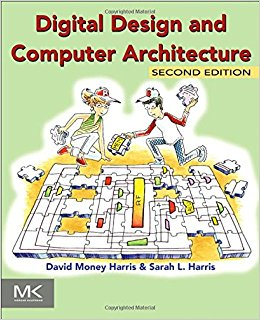
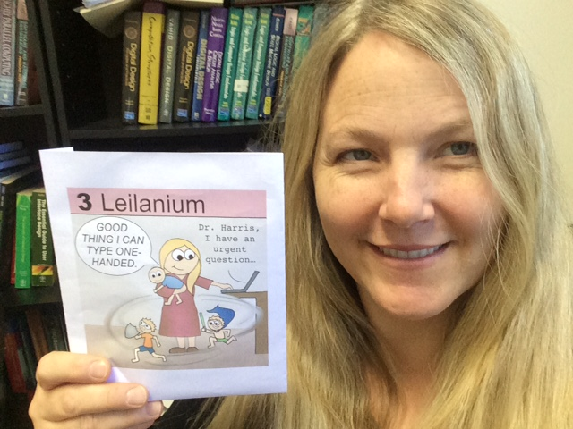

Leilanium is named in honor of Sarah Harris, who teaches electrical engineering at the University of Nevada, Las Vegas. In addition to being an #ActualLivingScientist, she is also the mother of three energetic children, who were part of the inspiration behind her Patron card.
This week, she sat down with me for a quick interview:
You’re in a field that doesn’t have a lot of women. How do people typically react when you tell them you’re an electrical engineer?
So often they’ll say “Oh, that’s really hard!” and it kind of bugs me that engineering has this bias of being too difficult, because – once you learn it– it’s very doable. I wish more people understood that it’s like everyday life.
Where does the idea of it being such a challenging career come from?
I think it’s the math and the way it’s taught. It’s often taught in way that’s intimidating and off putting, and unfortunately, math is often taught that way too: In a way that’s not inviting or accessible - instead it’s more of a “you can’t get this like I can.”
I think that’s one of my favorite things about your textbook cover, it looks very accessible with the cartoons. Where did you come up with the idea?

I’ve always wanted to write THAT textbook - since my undergrad. Because it’s FUN and creative – you get to design circuits and then test them. It’s freakin fun. The book started when my colleague David Harris–not related
(Laughing) I love how you say that all in one breath. People must ask if you’re related all the time.
They do. But we’re not related. He asked me if I wanted to collaborate on a book. I was in my second year at Harvey Mudd and he had connections to publishers. We really pushed and finished it in18 months from starting to published.
That’s fast!
Ridiculously fast. It was super fun to write. Having a great coauthor is critical – by that I mean it’s super important to have someone who is critical and supportive at the same time - he gave great feedback.
Did you write a better book together than either of you could have written by yourself?
Definitely. But the pace of our schedule was intense. During that year, I was working 100 hour plus weeks constantly — there were no weekends. And I was class testing it too, which was great motivation to keep on schedule.

And how has the book done?
It’s done pretty well. I’ve heard people say you don’t make any money doing a textbook – “it’s just like a donation to charity” - but I get royalty checks every year from the textbook. It’s not a huge sum of money - not enough to live on - but it’s a steady supplement to our income which has been really helpful. And more importantly, I think the book is making an impact in engineering, not only to help it be more accessible to students, but to help them really see the applications. Because that’s what science and teaching are all about—not trivia.
Do you feel like science is sometimes reduced to trivia?
Way too often. And it bugs me. I was at an engineering competition once when a fellow judge started really nitpicking a contestant’s project, asking what the part numbers were for various pieces, and when the student didn’t know, he lorded it over them, saying something like, “It’s a 7432. How come I know that and you don’t?”
The answer is because he’s been working on this for more than 40 years! Experts will always know more trivia than novices, but that’s not what’s at the heart of the science. The equations are important - and I value them, but if you don’t understand them, they’re useless. The application is where you get to really understand, and teaching is most effective when it’s connected to a real application.
And for our last question, If you could have lunch with any scientist, living or dead, who would you choose and why?
Lao Tze - I think people will be quick to say he’s not a scientist, but philosophy is a science, and I– I don’t know – I just love the Tao Te Ching. There is such wisdom there. I love the quote - “A good leader, when they are done, the people say, ‘ah, we did this ourselves.” I love that line. And we’re kind of at the opposite of that in western culture, and I think that’s something that stops us, in science too. We want our accolades and recognition, and it gets in the way of the real science.
I love that quote too. Thank you again, both for your work to make electrical engineering more approachable and applicable to students, and for being a patron.
Sarha’s Webpage: https://faculty.unlv.edu/sarahharris/
The Amazon page for Sarah and David’s excellent engineering textbook:
To claim your own place on the Periodic Table of Patrons, visit www.patreon.com/JennyBallif